Full Project Report
This report documents the complete workflow of Task 1000, from historical market data preparation and exploratory analysis to financial feature engineering, multi-horizon forecasting, model comparison, uncertainty analysis, and final price estimates.
The project focuses on Tesla (TSLA), Alphabet (GOOGL), Bitcoin (BTCUSD), Ethereum (ETHUSD), and QQQ. The analysis is designed to compare equity and cryptocurrency market behaviour across multiple forecasting horizons.
The objective of this project is to forecast the future prices of TSLA, GOOGL, BTCUSD, and ETHUSD across seven horizons: 30 days, 3 months, 6 months, 1 year, 3 years, 5 years, and 10 years.
Two forecasting approaches will be compared: ARIMA as a traditional time-series benchmark and Random Forest Regressor as a feature-driven machine learning model.
The project also incorporates momentum and mean reversion analysis, volatility regime analysis, and Monte Carlo simulation to assess forecast uncertainty and cross-asset differences.
Historical daily market data were collected from the following sources:
The datasets contain daily Open, High, Low, Close, and Volume information where available. BTCUSD from Stooq does not include a Volume field, so volume-based features are treated as optional for that asset.
The report is organized into the following stages:
The purpose of the EDA stage is to identify major differences in historical price behaviour, return characteristics, volatility, and cross-asset relationships before constructing predictive features and developing the forecasting models.
This section examines the long-term price behaviour of the four forecast assets and the QQQ benchmark.
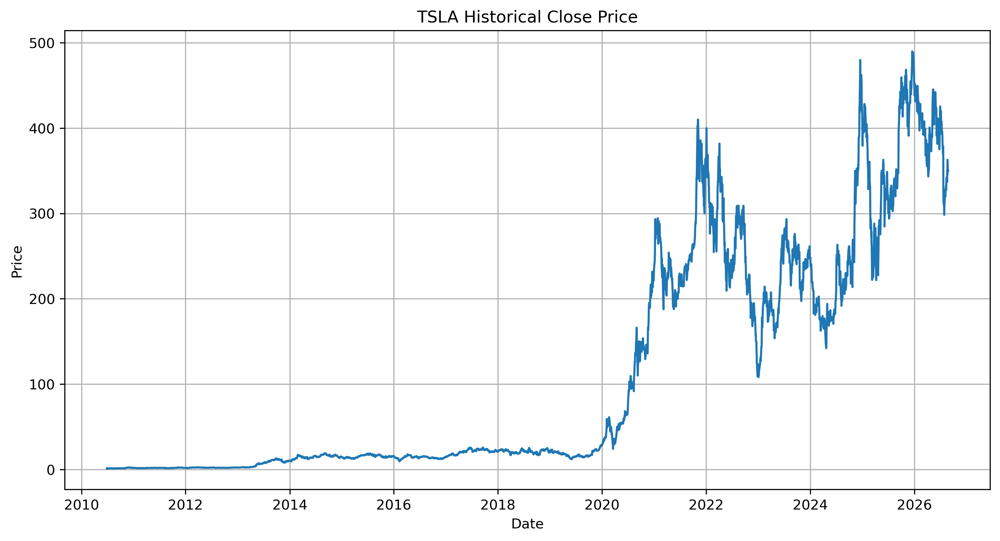
TSLA traded at relatively low price levels with gradual appreciation between 2010 and 2019. A clear regime shift appeared around 2020, when the stock entered a much stronger upward trend accompanied by substantially larger price swings.The post-2020 period was characterized by repeated rallies toward new highs followed by substantial corrections. The larger and more frequent price swings suggest higher forecasting uncertainty and a greater likelihood of regime-dependent behaviour.
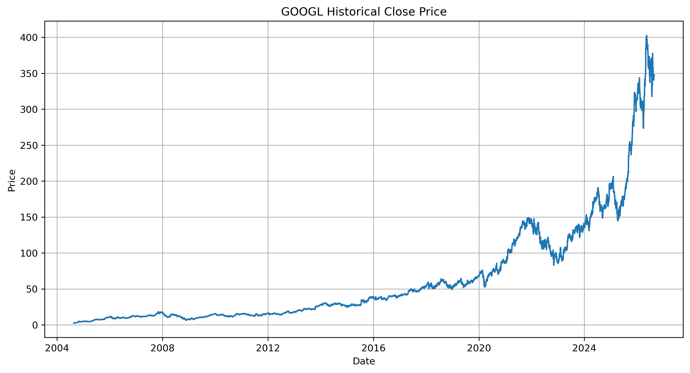
GOOGL showed steady growth over the long term, despite a temporary drawdown between 2022 to 2023. Its price path is relatively smooth, with a noticeable acceleration in the upward trend after 2024. Compared with TSLA, GOOGL exhibits a more persistent and smoother long-term trend.
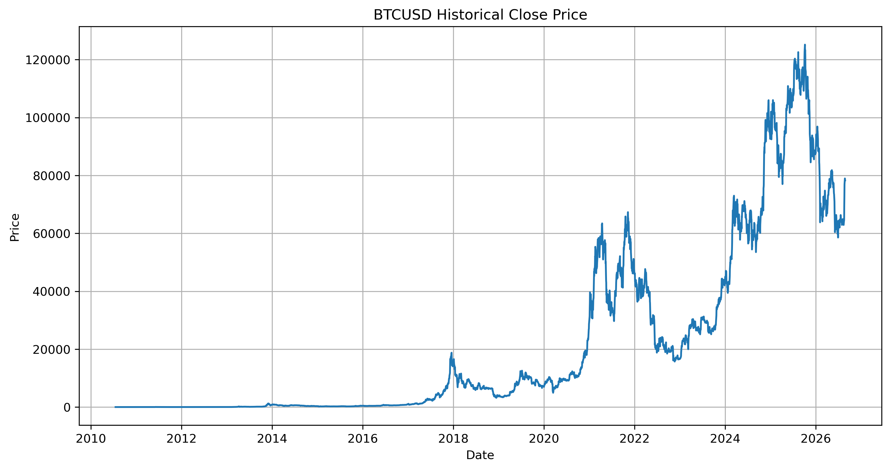
BTCUSD traded at low price level for an extended period before it entered a more pronounced growth phase around 2017-2018. After 2018, its price fluctuated and encountered several bloom-and-bust cycle. BTCUSD exhibits strong cyclical behavio. Therfore, forecasting BTCUSD mat require models that account for changing markert regimes, particularly across long horizons.
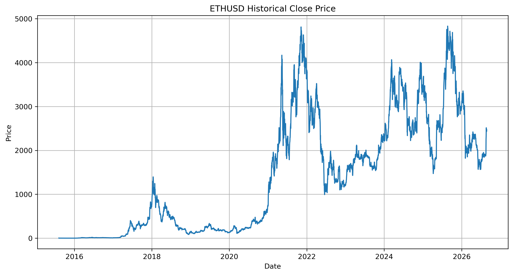
ETHUSD remained at relatively low price levels during its early years before entering a major growth phase around 2020–2021.This was followed by a substantial drawdown in 2022, after which the asset gradually recovered and entered another strong upward phase toward 2025–2026.Compared with BTCUSD, ETHUSD shows similarly cyclical behaviour but with more pronounced reversals between expansion and correction phases.These repeated boom-and-bust patterns suggest that ETHUSD forecasting is likely to be highly regime-dependent, particularly over longer horizons.
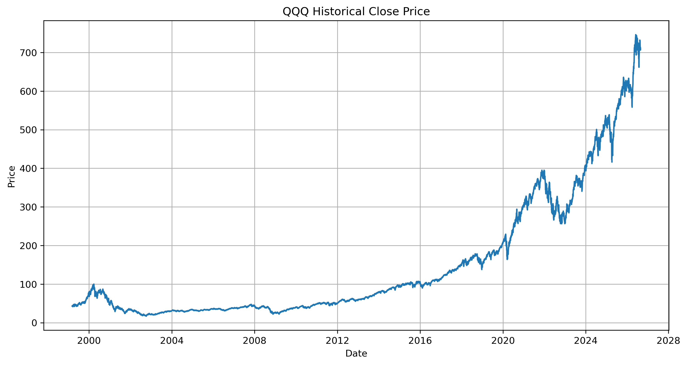
QQQ exhibited a relatively persistent long-term upward trend, with gradual appreciation over most of the sample period. The most notable interruption occurred around 2022, when the index experienced a clear drawdown before recovering and accelerating again from 2023 onward. Compared with TSLA and the cryptocurrency assets, QQQ follows a smoother and more continuous price path with fewer extreme regime shifts.This suggests that trend persistence and momentum-based features may provide more stable information for forecasting QQQ-related market movements.
Daily returns are used to examine short-term price fluctuations, extreme market movements, and volatility clustering across the selected assets.
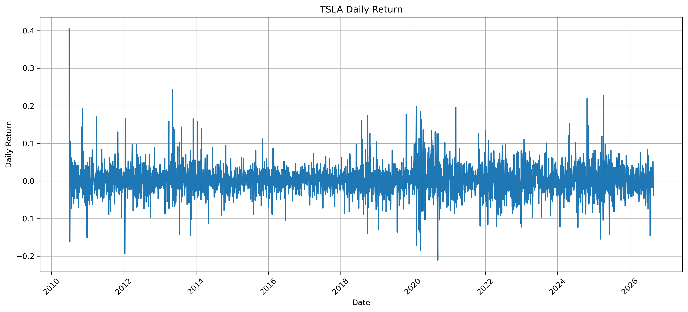
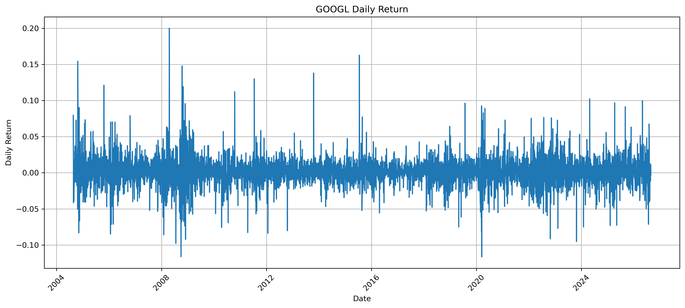
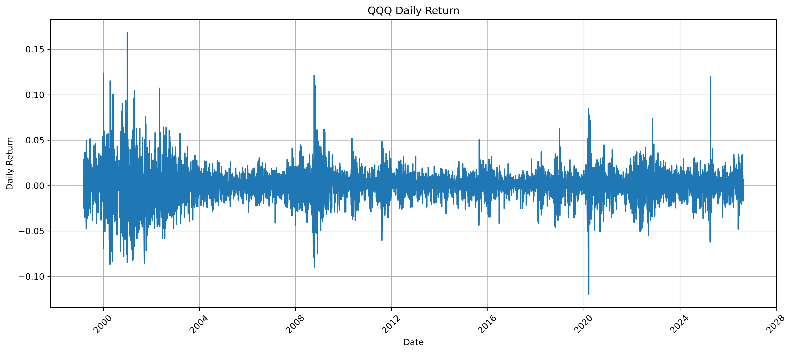
Within the equity group, TSLA shows the largest daily return fluctuations, while GOOGL and especially QQQ exhibit relatively narrower return ranges. All three assets show evidence of volatility clustering, suggesting that market risk changes through time rather than remaining constant. These patterns suggest that rolling volatility and volatility regime indicators may be useful features for the forecasting models.
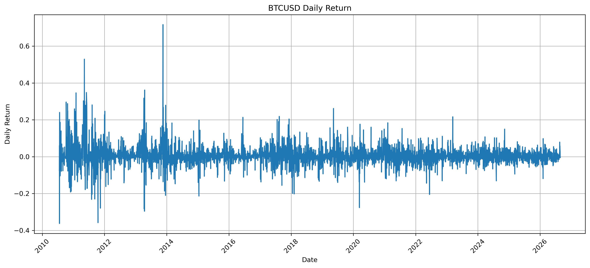
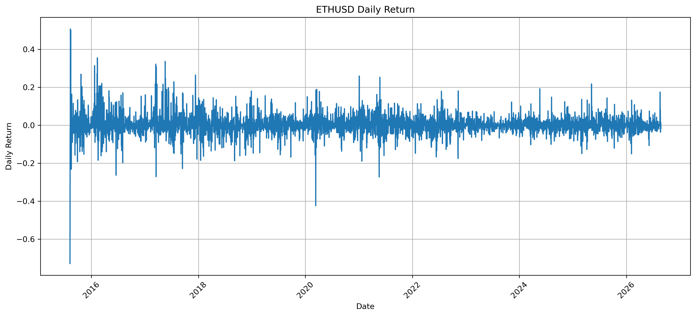
BTCUSD and ETHUSD exhibit more extreme daily return movements than the equity group, particularly during their earlier trading periods. Both assets contain substantial positive and negative spikes, with ETHUSD showing especially pronounced two-sided fluctuations. The magnitude of daily return movements appears to moderate over time, although both cryptocurrencies remain highly volatile. These patterns suggest that volatility regime analysis may be particularly relevant for cryptocurrency forecasting.
Return distributions are examined to compare dispersion, tail behaviour, and the frequency of extreme positive and negative returns across the selected assets.
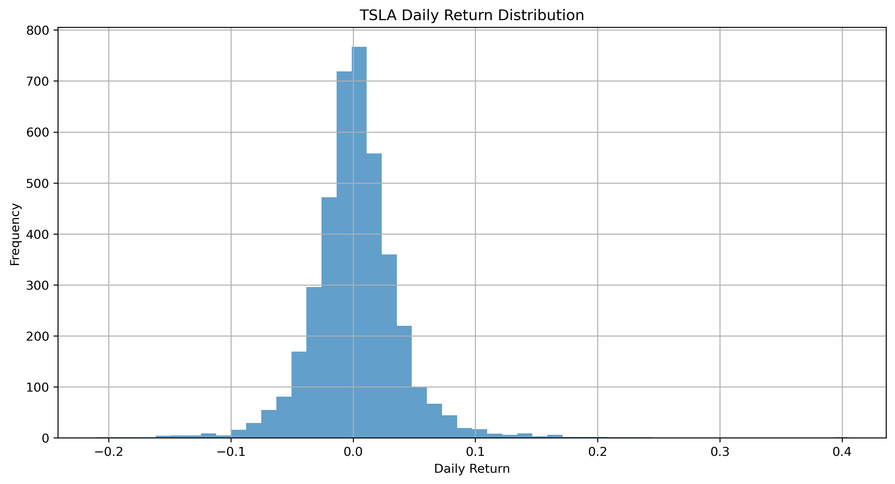
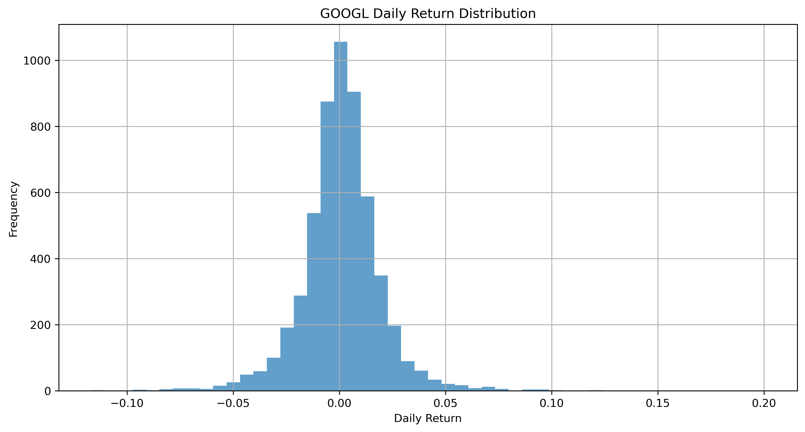
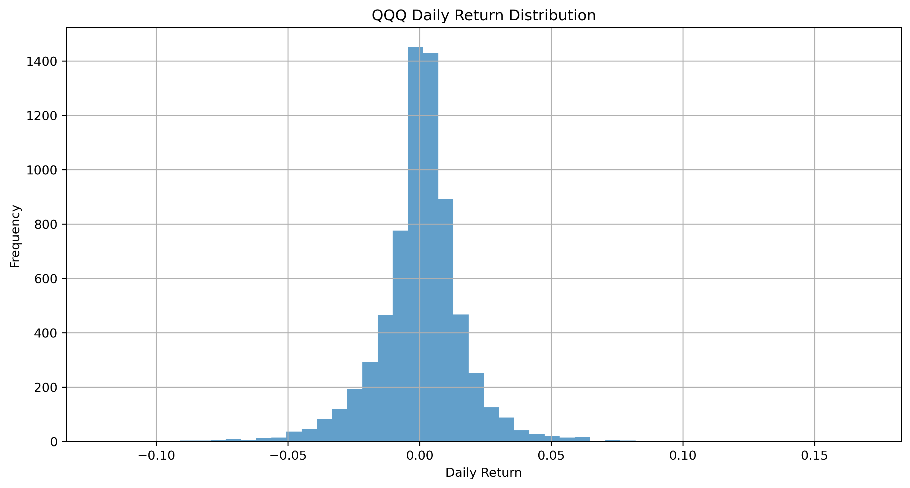
Within the equity group, QQQ shows the most concentrated return distribution around zero, while TSLA exihibits the widest dispersion. TSLA also displays more pronounced positive and negative tails, suggesting higher tail risk.Although all three distribution are centered near zero, they appear more peaked and heavy-tailed than a normal distributnion. This suggests that extreme return risk should be considered when evaluating forecast uncertainty.
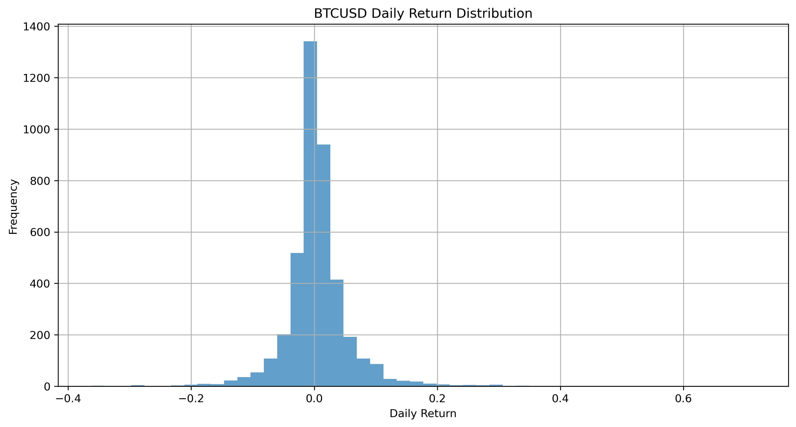
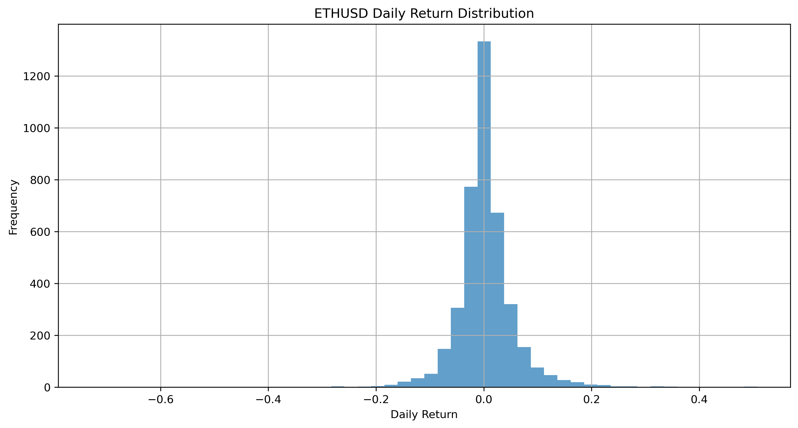
BTCUSD and ETHUSD both show return distributions concentrated around zero. Compared with the equity group, however, both cryptocurrencies exhibit substantially wider dispersion and more pronounced tail behaviour.ETHUSD appears relatively symmetric around zero, while both distributions are sharply peaked with extreme observations in their tails. BTCUSD contains particularly large positive- return observations, while ETHUSD also exhibits substantial downside extremes.These characteristics suggest greater forecast uncertainty because cryptocurrency returns are more exposed to tail risk and changing volatility regimes.
Cumulative returns provide a standardized comparison of long-term investment performance across assets with different absolute price levels. For each asset, the analysis assumes an initial investment of $1 on the first available trading day in its historical dataset and tracks how that investment would have grown over time.
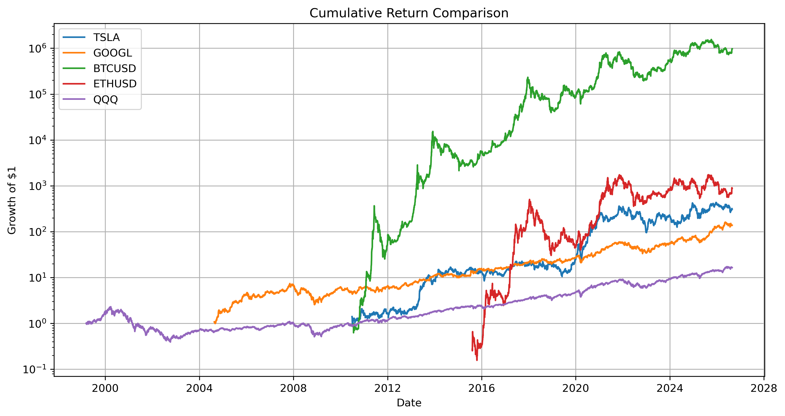
BTCUSD shows the strongest long-term wealth creation among the selected assets, meaning that an initial $1 investment at the beginning of its available historical period would have grown substantially more than in the other assets. ETHUSD follows a broadly similar growth pattern, with rapid appreciation accompanied by substantial drawdowns. By comparison, GOOGL and QQQ exhibit smoother and more persistent long-term growth paths, while TSLA shows greater fluctuations within the equity group.
A logarithmic scale makes it easier to compare cumulative growth paths across assets with substantially different return magnitudes. On a conventional linear scale, the much larger cumulative growth of BTCUSD and ETHUSD would compress the equity series near the bottom of the chart, making their long-term movements difficult to observe. The log scale therefore provides a clearer comparison of proportional growth across all five assets.
The higher cumulative growth of BTCUSD and ETHUSD is accompanied by larger price fluctuations and deeper drawdowns, indicating a more pronounced risk-return trade-off. GOOGL and QQQ demonstrate more stable long-term wealth accumulation, while TSLA occupies an intermediate position, with lower fluctuations than the cryptocurrencies but greater volatility than the other equity assets.
Twenty-day rolling volatility measures how short-term market risk changes over time and helps identify periods of relatively high and low volatility.
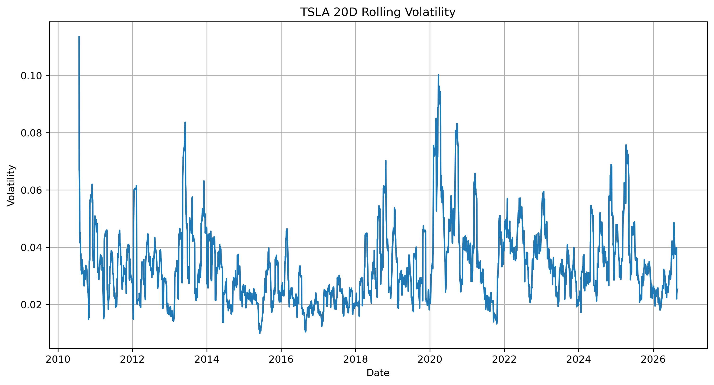
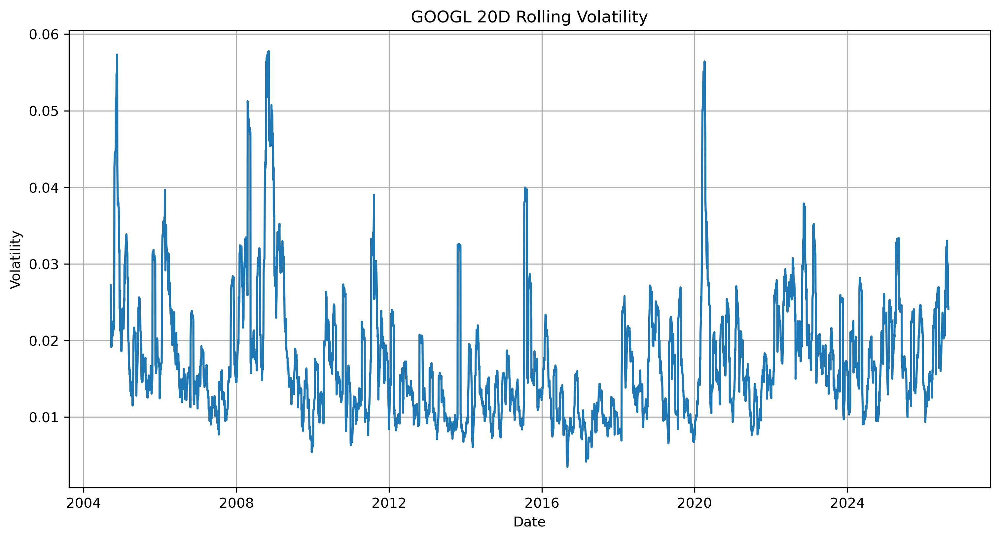
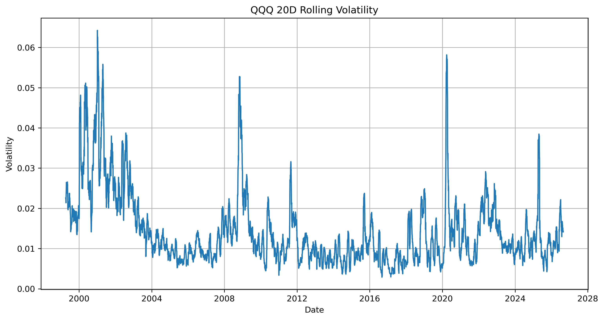
TSLA shows the highest overall volatility within the equity group, with its 20-day rolling volatility generally ranging between 2% and 5% and several peaks exceeding 8%. GOOGL generally remains at a lower volatility level, often around 1%–2%, although it experiences several pronounced volatility spikes. QQQ typically exhibits the lowest volatility within the equity group, but shows substantial spikes during periods of broader market stress. All three assets exhibit clear volatility clustering, although elevated-volatility periods occur at different points in time. The repeated transitions between low- and high-volatility periods indicate that volatility is time-varying rather than constant, supporting the use of rolling volatility and volatility regime indicators as forecasting features.
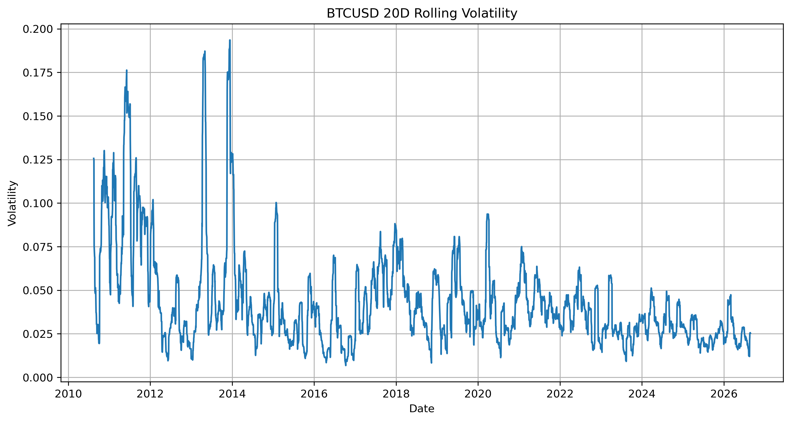
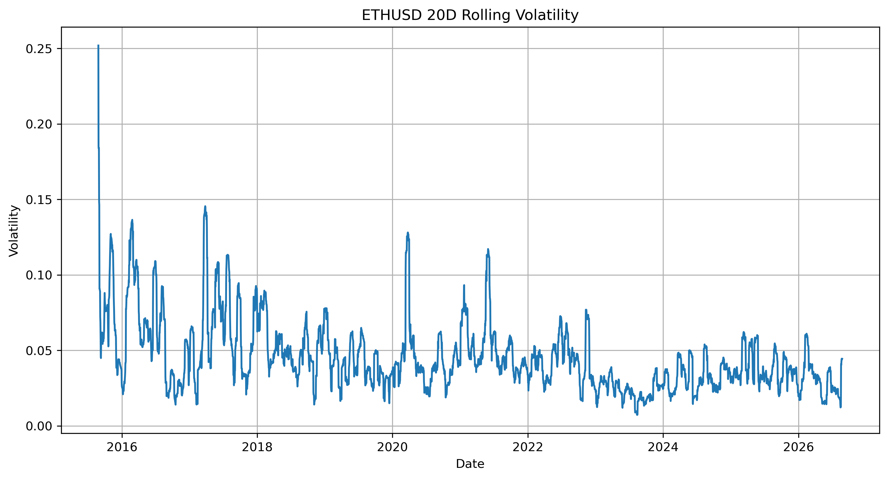
BTCUSD and ETHUSD both exhibit substantially higher rolling volatility than the equity assets, particularly during their earlier trading periods. ETHUSD reaches the highest volatility levels overall, while BTCUSD also shows several pronounced spikes above its typical range. Over time, both assets appear to experience a gradual moderation in volatility, although repeated high-volatility episodes remain visible. This pattern suggests that cryptocurrency risk is strongly regime-dependent and that volatility-related features may be especially important for forecasting these assets.
Daily return correlations are used to examine the extent to which the selected assets move together and to identify potential diversification relationships across asset classes.
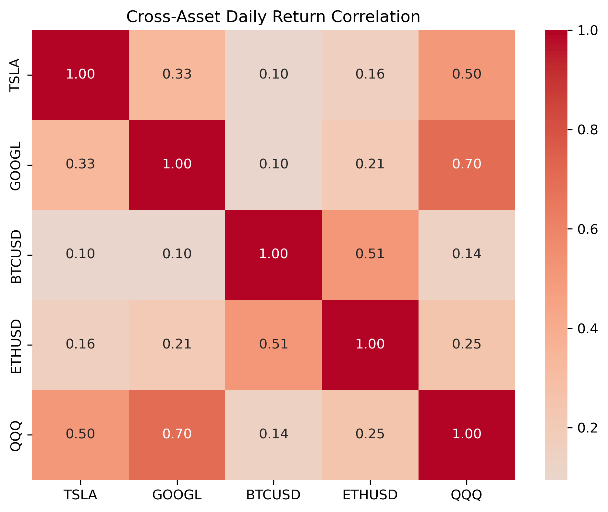
Within the equity group, GOOGL shows the strongest relationship with QQQ, with a correlation of 0.70, indicating that its daily returns move relatively closely with the broader growth-oriented equity benchmark. TSLA has a moderate correlation of 0.50 with QQQ, while its correlation with GOOGL is lower at 0.33. This suggests that TSLA is influenced by broader market conditions but also exhibits more idiosyncratic price behaviour.
BTCUSD and ETHUSD have a correlation of 0.51, indicating a moderate positive relationship between the two cryptocurrency assets. This suggests that they are partly driven by common crypto-market conditions, while still retaining asset-specific return behaviour.
Correlations between the equity and cryptocurrency groups are generally low, ranging from approximately 0.10 to 0.25. These weaker cross-asset relationships suggest potential diversification benefits, since equity and cryptocurrency returns do not consistently move together. From a forecasting perspective, the differences in correlation structure also indicate that market-relative features may have different predictive value across asset classes.
The exploratory analysis highlights clear differences in growth patterns, risk characteristics, and cross-asset relationships across the selected assets. Cryptocurrency assets generally exhibit faster long-term wealth creation but also experience larger drawdowns, stronger volatility regimes, and more pronounced extreme returns. The equity group follows comparatively smoother growth paths, although TSLA remains substantially more volatile than GOOGL and QQQ.
Following the exploratory analysis, a set of financial indicators is constructed to capture recent return behaviour, momentum, trend conditions, volatility, and market-relative performance.
These indicators are used as explanatory features in the Random Forest model, while ARIMA provides a separate univariate time-series benchmark based primarily on the historical price dynamics of each asset.
This section introduces the purpose of each forecasting indicator, explains how future return targets are constructed across multiple horizons, and defines the evaluation metrics used to assess model performance.
Daily return measures the percentage change in an asset's closing price from one observation to the next and provides the most basic measure of short-term price movement.
Formula:
Daily Return = (Current Close / Previous Close) - 1
Daily return is included as a forecasting feature because recent price movements may contain information about short-term continuation, reversal, or changing market conditions. However, individual daily returns are highly noisy and are therefore interpreted together with momentum, trend, volatility, and market-relative indicators rather than being used as a standalone forecasting signal.
The Random Forest model uses simple percentage returns, while the ARIMA framework uses log prices and first-differenced log returns for time-series stationarity analysis. This distinction reflects the different roles of returns in the two forecasting approaches.
Momentum indicators measure the cumulative price change over different historical lookback windows. Unlike daily return, which captures only the most recent one-period movement, momentum describes whether a broader short- or medium-term price trend has developed.
Formula:
Momentum(n) = (Current Price / Price n observations ago) - 1
| Indicator | Lookback | Purpose |
|---|---|---|
| Momentum 5D | 5 observations | Captures very short-term price direction. |
| Momentum 20D | 20 observations | Measures a broader short-term trend. |
| Momentum 60D | 60 observations | Captures more persistent medium-term price behaviour. |
Using multiple momentum horizons allows the model to distinguish recent price movements from more persistent trends. For example, positive 60-day momentum combined with negative 5-day momentum may indicate a short-term correction within a broader upward trend.
Momentum indicators are included because recent trends may persist when market information is incorporated gradually into prices. However, strong momentum can also indicate that an asset has become temporarily overextended and may subsequently experience mean reversion. Momentum is therefore interpreted together with moving-average, volatility, and market-relative features rather than as a standalone trading signal.
Moving-average indicators compare the current asset price with its recent average price level. They are used to assess whether the asset is trading close to, above, or below its recent trend.
Formula:
Price-to-MA(n) = Current Price / n-period Moving Average
| Indicator | Reference Window | Purpose |
|---|---|---|
| Price-to-MA20 | 20 observations | Measures the current price relative to a shorter-term average level. |
| Price-to-MA60 | 60 observations | Measures the current price relative to a broader medium-term trend. |
A value above 1 indicates that the current price is above its recent average, while a value below 1 indicates that it is trading below that average. This can contain information about both trend continuation and potential mean reversion.
For example, a price moderately above its moving average may indicate an established upward trend, while an unusually large deviation from the recent average may suggest that the asset has become temporarily overextended and could subsequently revert toward its historical mean.
These indicators complement momentum features because momentum measures the cumulative price change over a historical window, whereas Price-to-MA measures the current price's position relative to the average level observed during that window. Together, they provide the Random Forest model with information about both trend direction and the degree of price deviation.
Rolling volatility measures the recent variability of asset returns and is used to describe changes in short-term market risk. Unlike return and momentum indicators, volatility does not directly measure price direction; instead, it captures the magnitude and instability of recent price movements.
Calculation:
Rolling Volatility (20D) = Standard Deviation of Daily Returns over the most recent 20 observations
A rolling window is used because market volatility is not constant through time. The exploratory analysis showed repeated transitions between relatively calm and highly volatile periods across all selected assets, indicating clear volatility clustering. Cryptocurrency assets and TSLA generally exhibited larger volatility fluctuations than GOOGL and QQQ.
The 20-observation window provides the model with a measure of the current market risk environment. For equity assets, this window corresponds approximately to one trading month, while for cryptocurrency assets it represents 20 consecutive daily observations.
Volatility can also change the interpretation of other forecasting indicators. For example, strong positive momentum during a low-volatility period may represent a relatively stable trend, whereas the same momentum during a high-volatility period may reflect a more unstable market move. Rolling volatility is therefore used together with momentum and moving-average indicators rather than as a standalone directional signal.
Rolling volatility is backward-looking and reflects only recently observed market behaviour. A low recent volatility level does not guarantee that future volatility will remain low, particularly when new information or market shocks occur.
For the equity assets, QQQ is used as a growth-oriented market benchmark to provide information about broader market conditions and relative stock performance. These features are included for TSLA and GOOGL but not for BTCUSD or ETHUSD.
| Indicator | Calculation | Purpose |
|---|---|---|
| QQQ Return | Daily percentage return of QQQ | Captures broader growth-equity market movement. |
| Excess Return vs QQQ | Asset Return - QQQ Return | Measures asset performance relative to the benchmark. |
QQQ return provides market context. For example, a positive TSLA or GOOGL return may have a different interpretation when the broader growth-equity market is also rising than when the benchmark is declining.
Excess return helps distinguish market-driven price movements from relative outperformance or underperformance. A large positive excess return indicates that the asset has performed more strongly than QQQ during the same observation period.
These market-relative features are particularly relevant because the exploratory analysis showed meaningful relationships between the equity assets and QQQ, especially for GOOGL. However, QQQ is only a simplified market benchmark and does not capture all macroeconomic, sector-specific, or company-specific influences on equity returns.
QQQ-relative features are not applied to BTCUSD and ETHUSD because the exploratory analysis showed substantially weaker relationships between the equity and cryptocurrency groups.
The forecasting models are designed to predict cumulative future returns rather than future prices directly. Using returns provides a standardized target across assets with substantially different price levels and allows model errors to be interpreted on a comparable percentage basis.
Future Return Target:
Future Return(t,h) = Future Price(t,h) / Current Price(t) - 1
Price Reconstruction:
Predicted Future Price = Current Price × (1 + Predicted Future Return)
| Model | Forecast Horizons | Role |
|---|---|---|
| Random Forest | 30D, 3M, 6M, 1Y, 3Y, 5Y, 10Y | Tests feature-driven forecasting relationships across short and long horizons. |
| ARIMA | 30D, 3M, 6M | Provides a traditional short- and medium-horizon time-series benchmark. |
Forecast horizons are defined using calendar time rather than fixed row counts. For each observation, the target date is calculated by adding the required calendar horizon to the current date. The nearest available market observation on or after that target date is then used as the realized future price.
This approach is particularly important when comparing equities and cryptocurrencies. Equity markets do not trade on weekends or market holidays, while cryptocurrency markets operate continuously. A fixed observation shift would therefore represent different calendar horizons across the two asset classes.
All forecasting models preserve chronological order so that historical observations are used to predict later market outcomes. Random shuffling is avoided because it could allow future market information to enter the training sample.
Additional target purging is applied to the Random Forest training data. A training observation is retained only when both its feature date and its corresponding future target date occur before the train-test split. This prevents future prices from the test period from being indirectly used during model training.
Longer forecasting horizons naturally produce fewer usable observations because data near the end of the historical sample may not contain a sufficiently distant realized future price. For very long horizons, insufficient historical coverage may prevent leakage-safe model estimation altogether.
Two forecasting approaches are used to examine whether future asset returns can be predicted from different forms of historical market information. Random Forest provides a feature-driven machine learning model, while ARIMA serves as a traditional univariate time-series benchmark.
Random Forest combines multiple decision trees to learn potentially nonlinear relationships between current financial indicators and future cumulative returns. Each tree partitions the historical observations according to different combinations of features, and the final prediction is obtained by averaging predictions across the ensemble.
This structure is useful because financial indicators may interact in nonlinear ways. For example, positive momentum may have a different forecasting implication during a low-volatility trend than during a highly volatile and potentially overextended market move.
Random Forest Specification:
Number of Trees = 300
Maximum Tree Depth = 8
Minimum Samples per Leaf = 5
The specification is used as a controlled benchmark rather than an optimally tuned model. Tree depth and minimum leaf size are restricted to reduce excessive model complexity and overfitting.
ARIMA models future price behaviour using the historical time-series dynamics of each asset rather than the broader feature set used by Random Forest. The model is represented as ARIMA(p,d,q), where p captures autoregressive dependence, d represents the order of differencing required for stationarity, and q captures dependence on previous forecast errors.
Log prices are first tested for stationarity using the Augmented Dickey-Fuller test. When the price series is non-stationary but the first-differenced log-price series is stationary, the integration order is set to d = 1. ACF and PACF analysis, together with AIC and BIC model-selection criteria, are then used to identify reasonable candidate specifications.
ARIMA forecasts are evaluated using a walk-forward framework. As the evaluation period progresses, newly observed market information is added to the model history and model parameters are periodically re-estimated. This approach more closely represents a real-time forecasting process than generating all future forecasts from a single historical endpoint.
| Dimension | Random Forest | ARIMA |
|---|---|---|
| Model Type | Machine learning ensemble | Traditional time-series model |
| Main Input | Multiple financial indicators | Historical asset price series |
| Relationship | Nonlinear | Linear time-series dependence |
| Forecast Target | Future cumulative return | Future log price and reconstructed return |
| Forecast Horizons | 30D, 3M, 6M, 1Y, 3Y, 5Y, 10Y | 30D, 3M, 6M |
| Primary Role | Feature-driven forecasting model | Traditional benchmark model |
Using both approaches allows the analysis to test whether a broader set of financial indicators provides predictive information beyond the asset's own historical time-series structure.
Forecast performance is evaluated using multiple metrics because no single measure fully describes prediction quality. The evaluation considers forecast magnitude, sensitivity to large errors, explanatory performance, directional accuracy, and improvement relative to a simple no-change benchmark.
| Metric | Purpose | Interpretation |
|---|---|---|
| MAE | Measures the average absolute difference between predicted and realized future returns. | Lower values indicate smaller average forecast errors. |
| RMSE | Measures forecast error while placing greater weight on large prediction mistakes. | Lower values indicate better performance, particularly when large errors matter. |
| R² | Compares squared forecast errors with a predictor based on the mean realized return. | Positive values indicate improvement over the mean-target comparator; negative values indicate worse performance. |
| Directional Accuracy | Measures how often the model correctly predicts whether the future return is positive or negative. | Higher values indicate better directional classification, but do not measure forecast magnitude. |
| Baseline Improvement | Measures the reduction in MAE or RMSE relative to a zero-return benchmark. | Positive values indicate that the forecasting model outperforms the baseline. |
A zero-return benchmark is used to determine whether each forecasting model adds predictive value beyond a simple no-change assumption. The baseline always predicts a future return of zero, implying that the future price is equal to the current price.
Baseline Prediction:
Predicted Future Return = 0
Error Improvement:
Improvement = Baseline Error - Model Error
Positive Improvement → Model outperforms the baseline
Negative Improvement → Model underperforms the baseline
MAE and RMSE are used as the primary measures of return-magnitude forecasting accuracy. R² provides an additional comparison against a mean-return predictor, while directional accuracy evaluates whether the model correctly identifies the sign of future returns.
Directional accuracy should not be interpreted independently of the return distribution. If most observations within a forecast horizon have the same return sign, a model may achieve high directional accuracy without providing meaningful magnitude forecasting ability.